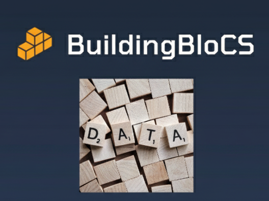
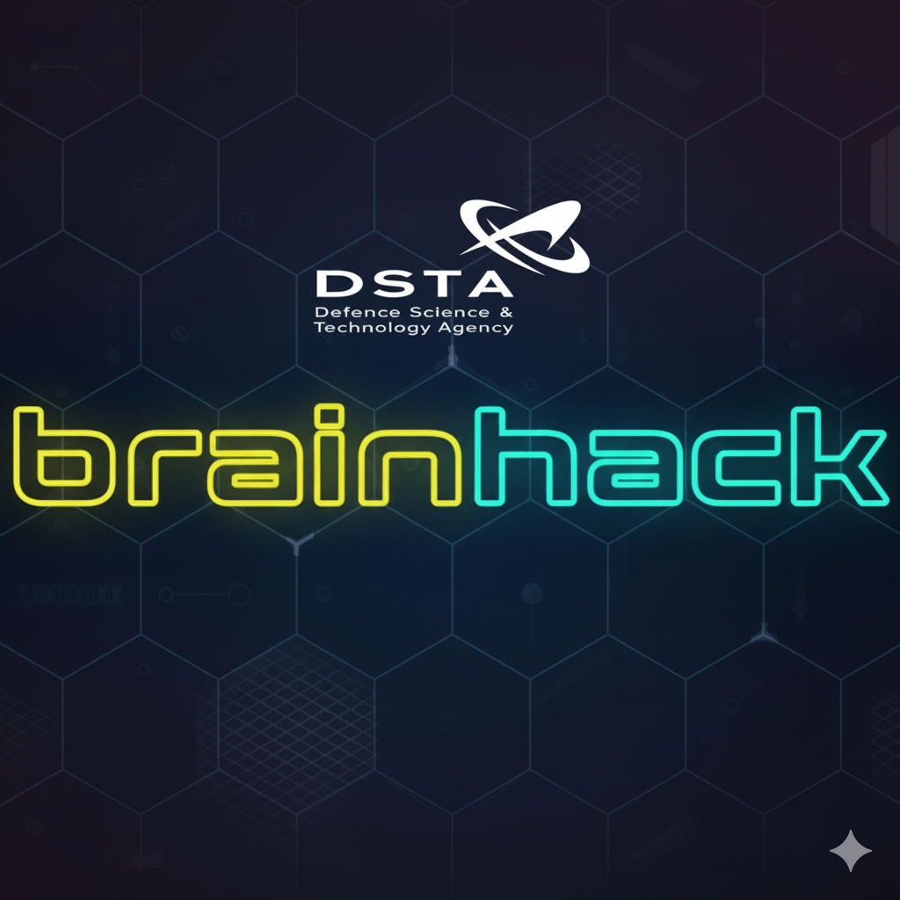
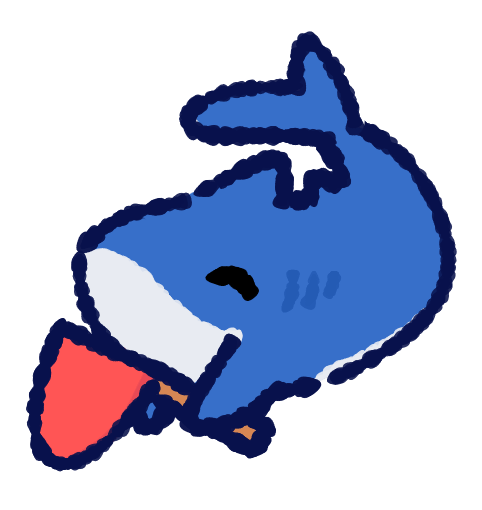
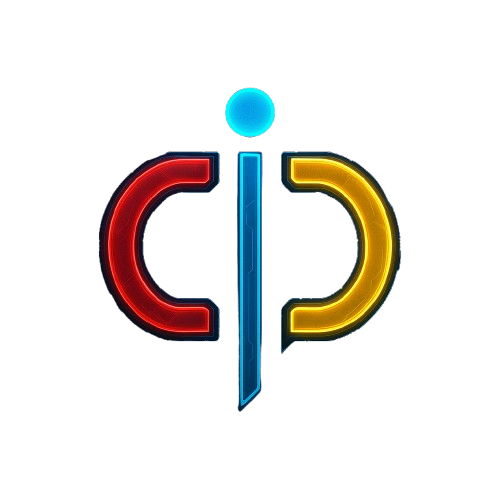
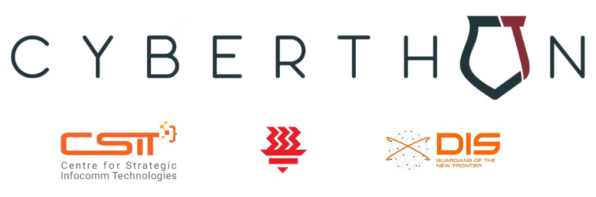
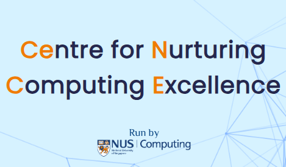

External Learning Opportunities
Learn 💻, compete 🏅 and have fun!✨🎉😄

BuildingBloCS
BuildingBloCS is a student-run computing conference featuring workshops, talks, and hands-on coding sessions across AI, cybersecurity, and software development.
- Singapore’s largest student-run computing conference.
- Hosts workshops on AI, web dev, cybersecurity & more.
- Started by JC and secondary school students — fully student-initiated.
- Introduces tech skills to equip you as a better software or web developer.

DSTA Brainhack
Brainhack is a national tech competition by DSTA with tracks like cybersecurity, AI, robotics, and digital defence simulations.
- Features multiple training workshops like the Cyber Defenders Discovery Camp (CDDC).
- Participants get hands-on challenges related to defending against digital threats.
- Dive deep into the exciting realms of cybersecurity, artificial intelligence (AI), space technologies, app development, fake news detection, extended reality and more.

Blahaj CTF
A beginner-friendly, community-hosted Capture-The-Flag competition that focuses on accessible cybersecurity challenges, often with a playful or light-hearted theme.
- Named after the popular IKEA shark plush “Blåhaj”
- Known for being welcoming to newcomers and encouraging exploration over difficulty.
- Runs in Singapore and is widely participated in by students and beginners in the local cybersecurity scene.
- Finalists receive a Blåhaj and other merch.

Competitive Programming Introductory Course (CPIC)
CPIC is an annual outreach program designed to introduce students in Singapore to the fundamentals of competitive programming and algorithmic problem-solving.
- Typically conducted over several days during the June school holidays
- Trainers who have excelled in the National Olympiad in Informatics (NOI) and are passionate about sharing their expertise
- Whether you're just starting out or looking to sharpen your skills, this program offers valuable training for competitive programmers at all levels
- Sign up for the next iteration to take your competitive programming journey to the next level

Cyberthon
Cyberthon is an annual cybersecurity competition designed for JC students. Participants will tackle various CTF challenges and compete against the best in their age group.
- Annual cybersecurity competition specifically for junior college students
- Features various Capture-The-Flag (CTF) challenges across different cybersecurity domains
- Compete against top students from JCs across Singapore
- Great opportunity to develop practical cybersecurity skills and network with peers

Centre for Nurturing Computing Excellence (CeNCE)
The Centre for Nurturing Computing Excellence (CeNCE), run by NUS School of Computing, supports computing learning among students through comprehensive training programs and competitions.
- Offers online independent learning modules covering programming, data structures, and machine learning
- Provides hands-on physical training such as the annual December NOI intensive training sessions
- Organises the Singapore Informatics League, a competitive platform for pre-university students
- Whether you're building foundational knowledge or preparing for competitive programming, CeNCE provides the resources and community to help you excel
Scholarships & Funding
CSIT Computing Scholarship
Annual allowance of $1,000, tenable for two years. Learning allowance of $1,000
Encourages and supports students who are passionate about computing and technology. It aims to nurture talent and inspire further education and careers in the dynamic tech industry.
- Singapore citizen
- Year 1 Junior College or equivalent Integrated Programme (IP) student enrolled in H2 Computing or taking a Computing-related subject (i.e. in IBDP/NUS High Diploma)
- Excellent GCE 'O' Levels results or equivalent
- Passionate about computing and technology